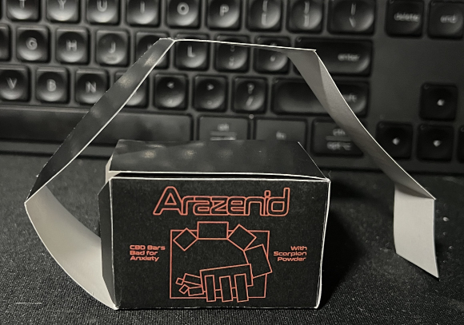
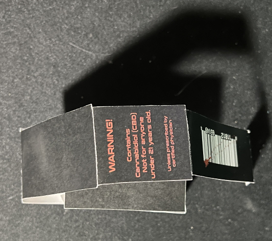
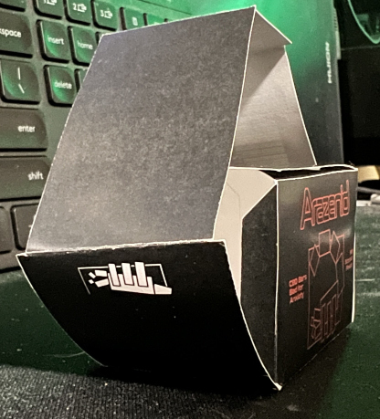
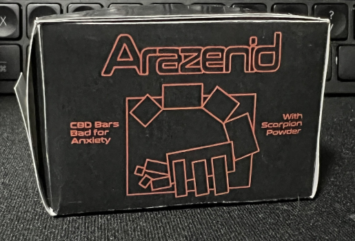
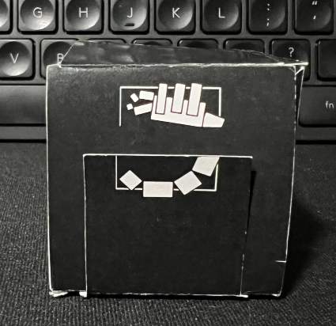
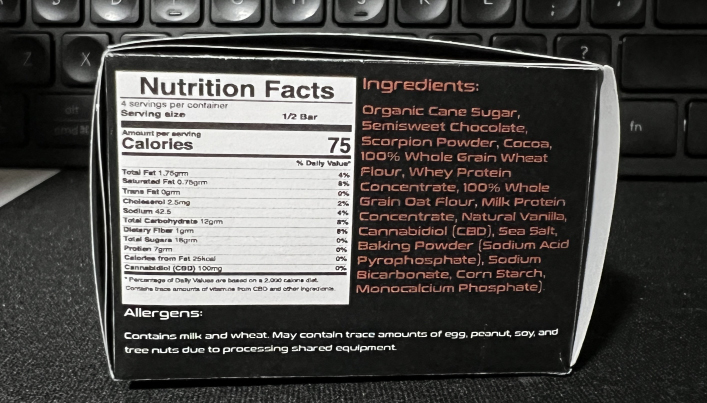
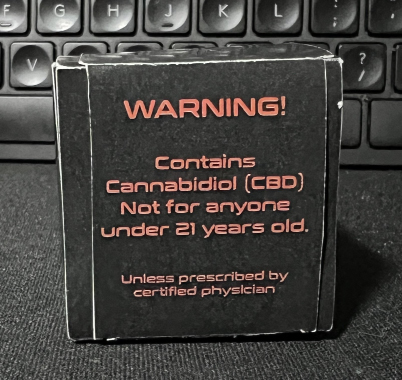
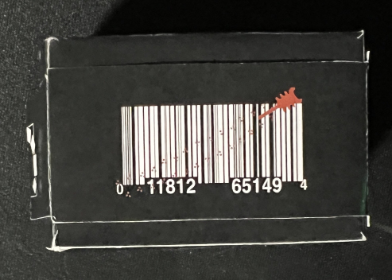

About Arazenid
In the heart of the Sonoran Desert, amidst the arid landscapes of Arizona, a family-run enterprise, Arazenid Farms, has unlocked the hidden potential of a creature that embodies resilience and strength - the scorpion. Arazenid Farms discovered that scorpions, specifically the Arizona Bark Scorpion, hold untapped nutritional value and therapeutic properties. These scorpions naturally inhabit the rugged terrains of the Sonoran Desert and Arazenid Farms have established innovative sustainable practices for breeding these creatures in a controlled habitat. This ensures the preservation of their natural ecosystem, cementing their commitment to sustainability by keeping it local and helping the environment.
Arazenid Farms delicately extracts the protein-rich essence from the scorpions, transforming it into a fine, nutrient-dense powder. This powder is then infused with high-quality CBD derived from organic sources, combining the benefits of these two natural wonders. Packed with essential amino acids, vitamins, and minerals, Arazenid bars offer a healthy, energy-boosting snack with the added calming effects of CBD, contributing to stress and anxiety relief as well as overall well-being.
While Arazenid Farms operates locally in Arizona, their vision is global. Arazenid represents a fusion of ancient wisdom and modern innovation, captivating consumers worldwide with its promise of wholesome nutrition and sustainable practices.
Arazenid Packaging







